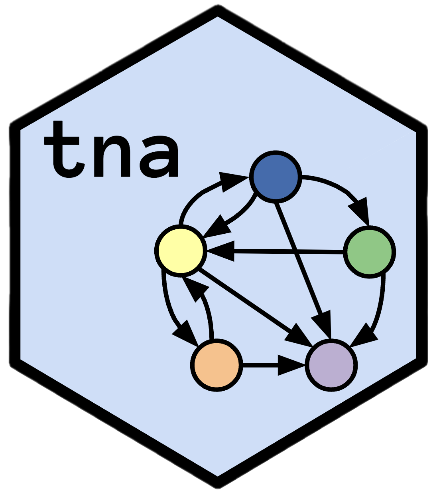

Print a Bootstrap Summary for a Grouped Transition Network Model
Source:R/print.R
print.summary.group_tna_bootstrap.RdPrint a Bootstrap Summary for a Grouped Transition Network Model
Usage
# S3 method for class 'summary.group_tna_bootstrap'
print(x, ...)See also
Validation functions
bootstrap(),
deprune(),
estimate_cs(),
permutation_test(),
permutation_test.group_tna(),
plot.group_tna_bootstrap(),
plot.group_tna_permutation(),
plot.group_tna_stability(),
plot.tna_bootstrap(),
plot.tna_permutation(),
plot.tna_reliability(),
plot.tna_stability(),
print.group_tna_bootstrap(),
print.group_tna_permutation(),
print.group_tna_stability(),
print.summary.tna_bootstrap(),
print.tna_bootstrap(),
print.tna_clustering(),
print.tna_permutation(),
print.tna_reliability(),
print.tna_stability(),
prune(),
pruning_details(),
reliability(),
reprune(),
summary.group_tna_bootstrap(),
summary.tna_bootstrap()
Examples
model <- group_model(engagement_mmm)
# Low number of iteration for CRAN
boot <- bootstrap(model, iter = 10)
print(summary(boot))
#> group from to weight p_value sig cr_lower
#> 1 Cluster 1 Disengaged Disengaged 0.680794702 0.09090909 FALSE 0.5105960265
#> 2 Cluster 1 Engaged Disengaged 0.020270270 0.09090909 FALSE 0.0152027027
#> 3 Cluster 1 Moderate Disengaged 0.120651574 0.09090909 FALSE 0.0904886803
#> 4 Cluster 1 Disengaged Engaged 0.158278146 0.09090909 FALSE 0.1187086093
#> 5 Cluster 1 Engaged Engaged 0.661642412 0.09090909 FALSE 0.4962318087
#> 6 Cluster 1 Moderate Engaged 0.124240751 0.09090909 FALSE 0.0931805632
#> 7 Cluster 1 Disengaged Moderate 0.160927152 0.09090909 FALSE 0.1206953642
#> 8 Cluster 1 Engaged Moderate 0.318087318 0.09090909 FALSE 0.2385654886
#> 9 Cluster 1 Moderate Moderate 0.755107675 0.09090909 FALSE 0.5663307565
#> 10 Cluster 2 Disengaged Disengaged 0.911206588 0.09090909 FALSE 0.6834049409
#> 11 Cluster 2 Engaged Disengaged 0.308310992 0.09090909 FALSE 0.2312332440
#> 12 Cluster 2 Moderate Disengaged 0.118299445 0.09090909 FALSE 0.0887245841
#> 13 Cluster 2 Disengaged Engaged 0.087719298 0.09090909 FALSE 0.0657894737
#> 14 Cluster 2 Engaged Engaged 0.671581769 0.09090909 FALSE 0.5036863271
#> 15 Cluster 2 Moderate Engaged 0.053604436 0.18181818 FALSE 0.0402033272
#> 16 Cluster 2 Disengaged Moderate 0.001074114 0.54545455 FALSE 0.0008055854
#> 17 Cluster 2 Engaged Moderate 0.020107239 0.27272727 FALSE 0.0150804290
#> 18 Cluster 2 Moderate Moderate 0.828096118 0.09090909 FALSE 0.6210720887
#> 19 Cluster 3 Disengaged Disengaged 0.875386574 0.09090909 FALSE 0.6565399309
#> 20 Cluster 3 Engaged Disengaged 0.062464509 0.09090909 FALSE 0.0468483816
#> 21 Cluster 3 Moderate Disengaged 0.181534460 0.09090909 FALSE 0.1361508453
#> 22 Cluster 3 Disengaged Engaged 0.111151537 0.09090909 FALSE 0.0833636529
#> 23 Cluster 3 Engaged Engaged 0.665247019 0.09090909 FALSE 0.4989352641
#> 24 Cluster 3 Moderate Engaged 0.149804941 0.09090909 FALSE 0.1123537061
#> 25 Cluster 3 Disengaged Moderate 0.013461888 0.09090909 FALSE 0.0100964162
#> 26 Cluster 3 Engaged Moderate 0.272288472 0.09090909 FALSE 0.2042163543
#> 27 Cluster 3 Moderate Moderate 0.668660598 0.09090909 FALSE 0.5014954486
#> cr_upper ci_lower ci_upper
#> 1 0.850993377 0.6629718716 0.698873071
#> 2 0.025337838 0.0158519167 0.022858049
#> 3 0.150814467 0.1171521929 0.128342833
#> 4 0.197847682 0.1370894660 0.175789378
#> 5 0.827053015 0.6514722232 0.676429994
#> 6 0.155300939 0.1203495244 0.133829547
#> 7 0.201158940 0.1551062450 0.179526257
#> 8 0.397609148 0.3068419650 0.328997306
#> 9 0.943884594 0.7438475913 0.759839255
#> 10 1.139008235 0.9055134290 0.916671393
#> 11 0.385388740 0.2756782946 0.342026816
#> 12 0.147874307 0.0955088662 0.143172904
#> 13 0.109649123 0.0820481462 0.093368500
#> 14 0.839477212 0.6295802973 0.699644703
#> 15 0.067005545 0.0461433649 0.073078586
#> 16 0.001342642 0.0007062269 0.001483913
#> 17 0.025134048 0.0166757136 0.030098695
#> 18 1.035120148 0.8090565758 0.847857543
#> 19 1.094233218 0.8692779708 0.879761568
#> 20 0.078080636 0.0575091387 0.070167053
#> 21 0.226918075 0.1703979372 0.191576641
#> 22 0.138939422 0.1073741493 0.118584479
#> 23 0.831558773 0.6498128490 0.672291445
#> 24 0.187256177 0.1367911937 0.158611294
#> 25 0.016827360 0.0119342031 0.014904693
#> 26 0.340360591 0.2680909334 0.280063307
#> 27 0.835825748 0.6530367511 0.688066118